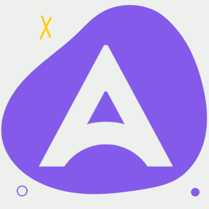

Visando aprimorar minhas soft-skills, ingressei em duas organizações durante a graduação:
· Átria Jr.: Uma empresa júnior que oferece soluções nas áreas de ambiental, telecomunicações, e TI.
Atualmente, sou assessor de TI desde maio de 2023, e minha experiência não poderia ter sido melhor - todos do grupo são bem acolhedores e têm ótima ambição.
· CDI: A Comissão Discente de Informática visa representar os cursos de TI da Faculdade de Tecnologia da Unicamp, unindo alunos de diversos períodos da área.
Estou no cargo de assessor de assuntos administrativos e logísticos, tratando diariamente sobre documentos e a organização da comissão.
Quem sou eu?
Nascido em Bauru, me apaixonei por informática ao cursar Ensino Técnico juntamente ao Ensino Médio, de 2020 a 2022.
Desde então, me imergi no mundo de programação, focando em Front-End.
Atualmente curso Bacharelado em Sistemas de Informação, na Faculdade de Tecnologia da Unicamp, e viso aprimorar minhas soft-skills, tendo entrado
em uma empresa Jr. para maiores experiências no ambiente de trabalho.
Experiência
